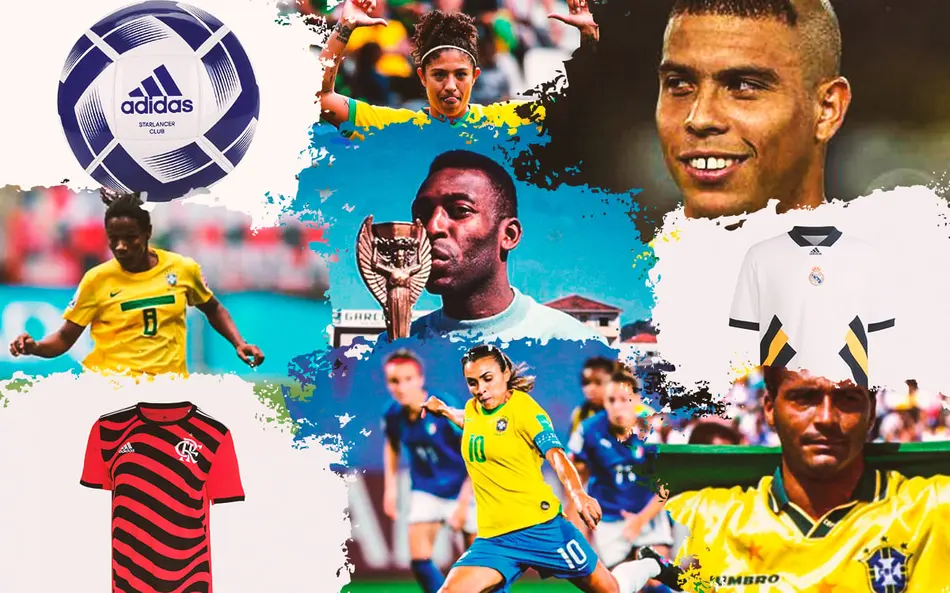
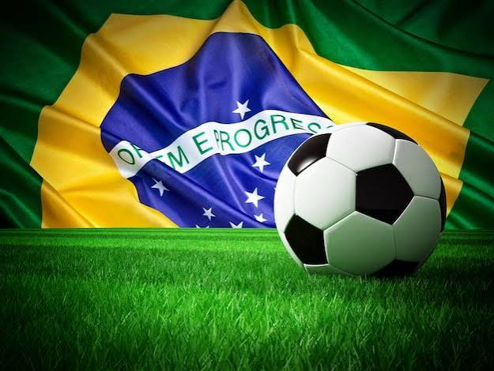
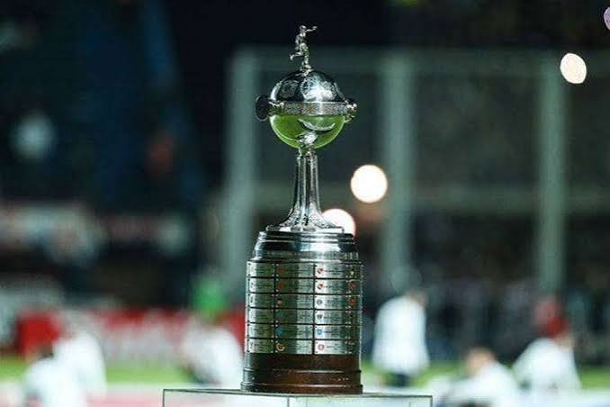
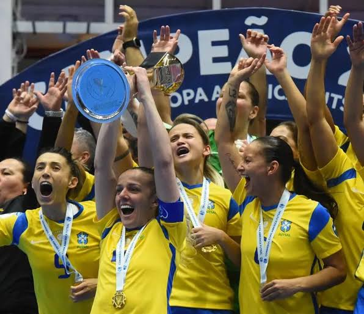

O futebol brasileiro é a maior referência técnica e cultural do esporte no mundo, sendo o único único pentacampeão da Copa do Mundo (1958, 1962, 1970, 1994 e 2002). Conhecido globalmente pelo estilo de jogo alegre, criativo e improvisado — batizado de "futebol-arte" ou "jogo bonito" —, o país revelou Pelé, o Rei do Futebol, além de lendas como Garrincha, Zico, Ronaldo, Ronaldinho e Neymar.

Introduzido no Brasil em 1894 por Charles Miller, o esporte rapidamente deixou de ser uma prática da elite para se tornar uma paixão das massas e um pilar da identidade nacional. Hoje, as principais competições nacionais são o Campeonato Brasileiro (Brasileirão) e a Copa do Brasil, que movem rivalidades históricas entre grandes clubes como Flamengo, Palmeiras, São Paulo, Corinthians, Santos, Grêmio, Internacional, Cruzeiro e Atlético-MG. Além do sucesso nos gramados, o Brasil também é uma potência histórica no futebol feminino, liderado por Marta, eleita seis vezes a melhor jogadora do mundo.

Nos últimos anos, essa hegemonia ganhou novos capítulos com o domínio avassalador dos clubes brasileiros na Copa Libertadores da América, acumulando uma sequência impressionante de títulos consecutivos e consolidando o país como o centro financeiro e técnico do futebol sul-americano. Paralelamente, uma nova geração de craques — liderada por nomes como Vinicius Júnior, Rodrygo e Endrick — mantém vivo o DNA do drible e do protagonismo nos maiores clubes do futebol europeu.

A paixão nacional também se renova com o crescimento exponencial do futebol feminino dentro de casa. O Brasileirão Feminino atrai cada vez mais investimentos, público e visibilidade, pavimentando o caminho para o surgimento de novos talentos sob o comando do técnico Arthur Elias. Toda essa evolução técnica e cultural culminará em um marco histórico: as atenções do planeta estarão voltadas para as oito cidades-sede que receberão a Copa do Mundo Feminina da FIFA no Brasil, o primeiro Mundial da modalidade realizado em solo sul-americano, prometendo consolidar definitivamente o futebol como o maior patrimônio de todo o povo brasileiro.